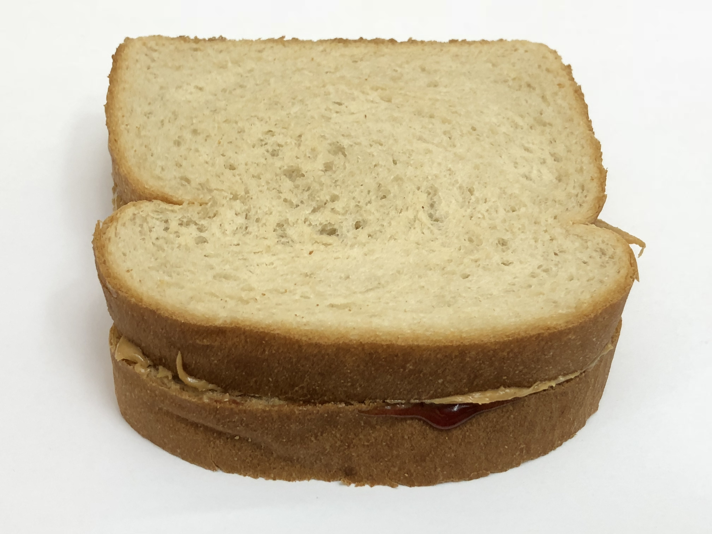

Peanut Butter and Jelly Sandwich

Description
The peanut butter and jelly sandwich is a very common and easy to make meal.
Most people will have eaten one or more in their life. Peanut butter, jelly
squished between two slices of bread is a classic delicacy for all.
Ingredients
- 2 Slices of bread
- 2 tablespoons of peanut butter
- 2 tablespoons of jelly
Steps
- Spread Peanut butter on one slice of bread
- Spread jelly on the other slice of bread
- combine slices of bread with jelly and peanut butter touching
- (optional)Slice sandwich in half as preferred